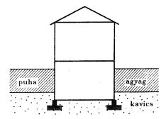
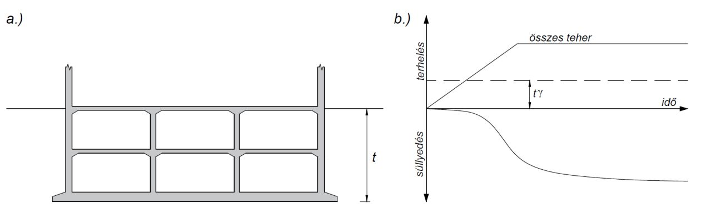
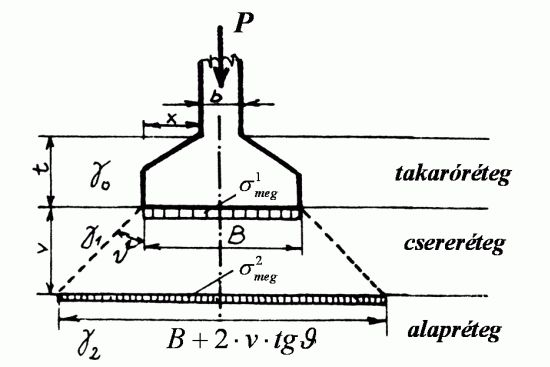
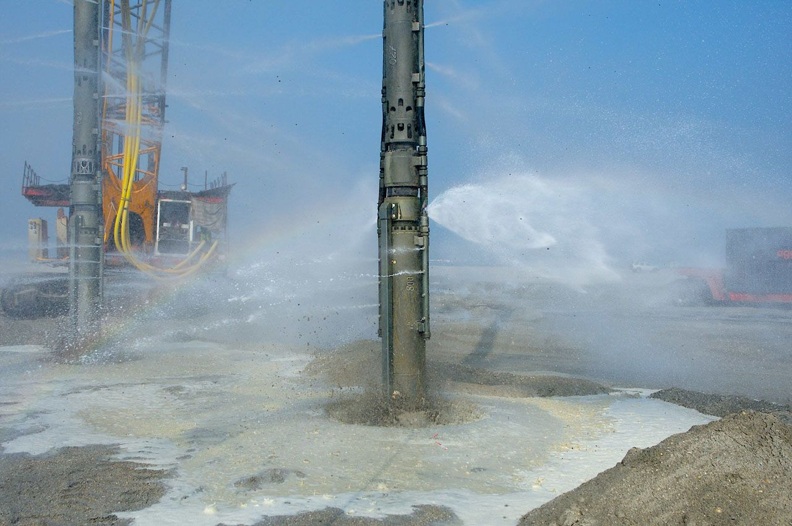
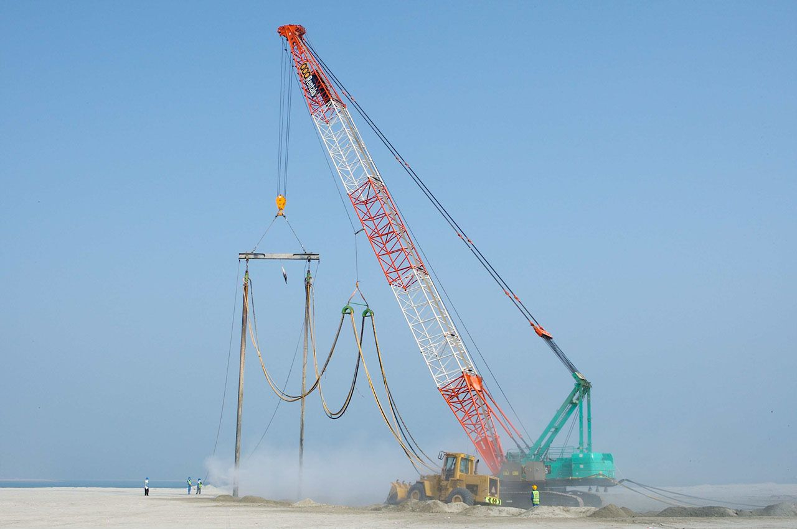
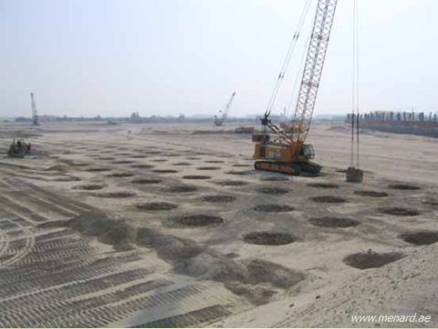
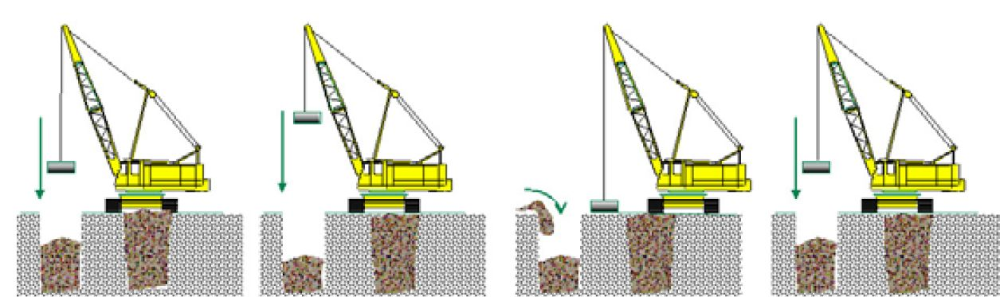
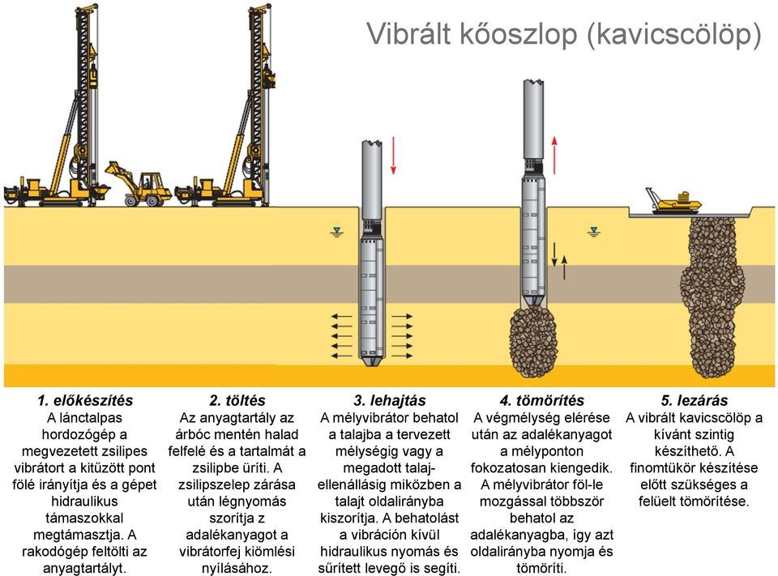
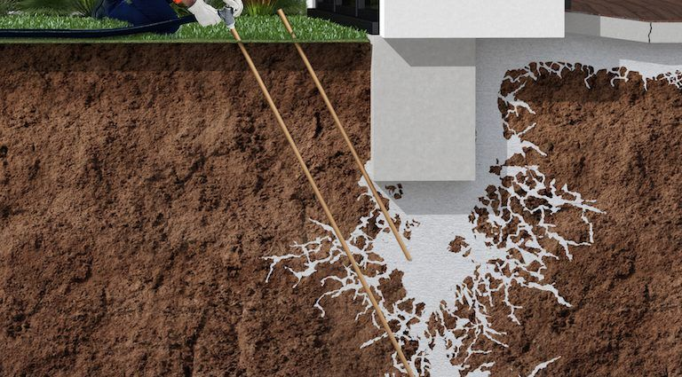
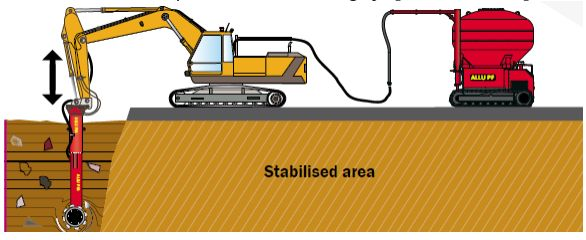

Süllyedéstűrés: mennyit bír az épület?
A teherbírásra méretezett alap még nem kész: meg kell nézni, hogy kialakulnak-e olyan süllyedések, amelyek az építményre károsan hatnak vissza. Hazai talajviszonyok mellett gyakran nem a teherbírási, hanem a használhatósági határállapot a mértékadó.
Abszolút süllyedés
Magassági értelemben vett mozgás. A csatorna- és egyéb közműcsatlakozások, a csatlakozó épületek szempontjából mértékadó. Általában 50 mm megengedhető (MSZ EN 1997-1 szerint is).
Egyenlőtlen süllyedés
Elferdülést, meggörbülést, áthajlást okoz; a többlet-igénybevételek (nyomaték, nyíróerő) károsítják a szerkezetet, repedések keletkeznek. Ez károsítja az épületet – nem az abszolút süllyedés.
Az alapmozgások jellemzői – próbáld ki!
Az MSZ EN 1997-1 H melléklete szerint ellenőrizendő jellemzők: s süllyedés, δs süllyedéskülönbség, θ elfordulás, ω merev billenés (dőlés), Δ relatív lehajlás, Δ/L lehajlási viszonyszám és β relatív elfordulás (szögtorzulás), valamint a vízszintes eltolódás és a rezgésamplitúdó. A megengedett értékeket a felszerkezet tervezője adja meg.
Négy alappont süllyedése (L = 12 m)
50 mm
abszolút süllyedés – általában megengedhető
20 mm
szomszédos oszlopok süllyedéskülönbsége – szokványos szerkezeteknél általában megengedhető; a mértékadó a δs/L arány
1/500
relatív elfordulás – szerkezetileg általában megengedhető; 1/150 már tönkremenetelt okoz(hat)
Kitekintés: nemzetközi tapasztalat szerint az 1/300 körüli billenés szemmel már feltűnő, a keretszerkezetek szerkezeti kára 1/150–1/250 relatív elfordulásnál kezdődik, a falak és válaszfalak repedése már 1/500 körül megjelenhet.
Mitől függ a süllyedéstűrés?
Szerkezet szerint
A statikailag határozatlan szerkezetek (többtámaszú tartók, keretek, ívtartók) érzékenyek – és az előregyártott paneles, blokkos épületek is (a kapcsolatok acélbetéteinek korrózióvédelme miatt).
Méretek szerint
A magas súlypontú építmények: víztornyok, gyárkémények, szélkerekek. A kisebb, alacsonyabb épületek pedig kisebb merevségük miatt érzékenyebbek – a károsodott hazai épületek nagy része 1–3 szintes.
Rendeltetés és talaj szerint
Ahol a repedésmentesség a biztonságos üzem feltétele (tartályok, medencék). Kötött talajon (agyagon) kb. másfélszer nagyobb süllyedéskülönbség engedhető meg, mint szemcsésen – a lassú konszolidációt jobban bírja az építőanyag.
Az egyenlőtlen süllyedés hat alapesete
1 · Eltérő összenyomhatóság
Azonos talpnyomás, de kisebb modulus → nagyobb süllyedés a lágy oldalon.
2 · Excentrikus teher
e ≠ 0: trapéz alakú talpnyomás, merev alapnál lineárisan változó süllyedés.
3 · Eltérő alap és merevség
Cölöp és síkalap között kényszerített süllyedéskülönbség.
4 · Feszültség-szuperpozíció
A szomszéd épület Δσ-je összegződik → egymás felé billennek (pl. a kanadai „kissing” silók).
5 · Süllyedési teknő
Alagút, üreg: kívülről rákényszerített süllyedési teknő.
6 · Egyoldali konszolidáció
Talajvíz-leszívás (pl. munkagödör) → Δσ′ növekedés csak az egyik oldalon.
| Repedéstágasság | Jelleg | Teendő |
|---|---|---|
| < 0,1 mm | hajszálrepedés | esztétikai |
| 0,1–1 mm | nagyon enyhe | festéskor javítható |
| 1–5 mm | enyhe, látható repedések | festés, javítóvakolat |
| 5–15 mm | mérsékelt | vakolással rendbe hozható (duzzadó cementtel) |
| 15–25 mm | súlyos – nyílászárók befeszülnek | részleges átépítés |
| > 25 mm | nagyon súlyos | szerkezeti megerősítés, durvább esetben részleges vagy teljes újraépítés |
A repedések a nagyobb süllyedésű hely felé emelkednek; az első repedések a leggyengébb helyeken (ajtók, ablakok sarkai között) jelennek meg.
Önellenőrzés · 1. fejezet
Négy irány – a talajtól a szerkezetig
Ha a számított süllyedések nem engedhetők meg, az eredeti terveken változtatni kell. A módszerek kombinálhatók – a választás az altalajtól, a beavatkozás mélységétől és a költségtől függ.
Módszerválasztó – melyik jöhet szóba?
Milyen a problémás talaj?
Hol van a talajvíz?
Milyen mélyen van a gond?
Mélyebben kedvezőbb réteg van?
Helyzet
Egyszerűsített, oktatási célú döntéssegítő a módszerek alkalmazási feltételei alapján – a valós választás mindig talajvizsgálaton és számításon alapul.
Összefoglaló táblázat
| Módszer | Alkalmas talaj | Mélység, jellemző adat | Korlát, megjegyzés |
|---|---|---|---|
| a) Kisebb talpnyomás | ha mélyebben kevésbé összenyomódó réteg van | szélesebb alap, kisebb q | nő a súly és a határmélység; fordított rétegződésnél ronthat |
| b) Mélyebb alapsík | pár méteren belül jobb teherbíró réteg | pince: kiemelt föld tehermentesít | 2–2,5 m-nél mélyebb sávalap nem gazdaságos |
| c) Talajcsere | bármely rossz talaj, sekély zónában | 50–80 cm, ≤ 30 cm-es rétegekben tömörítve | csak talajvíz felett; kiszélesítés: B + 2·v·tgϑ |
| Mélytömörítés | laza szemcsés talaj, feltöltés | vibrátor Ø 25–40 cm, öblítéssel | finomszem-tartalom kb. < 10–12% |
| Dinamikus tömörítés | lazább-puhább talaj, nagy felület | 15–40 t ejtősúly, H = 10–40 m; max. 5–7 m | erős rezgés – épületek mellett nem |
| Kőtömzs | nagyon laza-puha talaj | szemcsés anyag bedöngölése, nagy átmérőjű tömzsök | kiszorításos tömörítés + teherbíró elemek |
| Kavicscölöp | lazább-puhább talaj (kötött is) | zsilipes mélyvibrátor, Ø ≈ 0,6–1,0 m | függőleges drénként is hat |
| Cementbesajtolás | 0,8–1 mm-nél durvább szemcsés, repedezett talaj | csövek 50–100 cm-enként, 7–10 atm | alulról felfelé; finom talajba nem jut be |
| Kétkomponensű injektálás | homokos, iszapos talaj | duzzadó geokompozit | agyagban nem hatékony; utólagos megerősítés |
| Tömegstabilizáció | tőzeg, puha agyag, szerves talaj | keverőfej 1,5 m × Ø 0,95 m; max. ~7 m | állékony területről indul; idő kell a szilárduláshoz |
| e) Előterhelés | telített, összenyomható kötött talaj | a teher ≥ a későbbi épületteher | hosszú idő – drénekkel gyorsítható |
| f–g) Szerkezet, sorrend | – | merev vagy hajlékony szerkezet, süllyedési hézag | kiegészítő eszköz |
| h) Mélyalapozás | ha a teherbíró réteg mélyen van | cölöp, résfal | sokszor a legegyszerűbb, leggyorsabb |
3D süllyedés-szimulátor
Nagyobb alapfelület → kisebb talpnyomás. Mélyebb alapsík → jobb teherbíró réteg, több kiemelt föld. De vajon mindig csökken a süllyedés? Forgasd a 3D modellt, húzd a csúszkákat, és figyeld a feszültségburát, a határmélységet és a süllyedést!
Kihívás:
Ráfordítás-index (beton + földmunka, kiinduló terv = 100):
Feszültség az alapsík alatt
Süllyedés a változó függvényében
A szimulátor a pontosabb süllyedésszámítás lépéseit követi: tartós teher → feszültség az alaptest alatt (négyszög alakú terhelt felület középpontja alatt, Steinbrenner; vagy Jáky-féle lineáris közelítés) → határmélység (Jáky: m₀ = B négyzetes alapnál; vagy a hazai gyakorlat szerinti 0,2·σ₀ kritérium) → rétegenkénti összegzés: s = Σ Δσz·Δh / Eoed. A földkiemelés hatását a q₀ = q − γ·D többletfeszültség veszi figyelembe; az alaptest és a visszatöltés súlya a teherhez adódik. Oktatási modell, nem tervezőprogram.
Kisebb talpnyomás alkalmazása
A talaj teherbírása szempontjából szükségesnél nagyobb felületű alapot építünk. Szélesebb alapfelület alatt kisebb feszültségek keletkeznek. Sok esetben azonban nem csökkenti a süllyedést olyan mértékben, mint azt a tervező várja:
- a szélesebb alaptest maga is nagyobb súlyt jelent,
- főként pedig a szélesebb alap alatt nagyobb mélységig jutnak le az összenyomódást okozó feszültségek – nagyobb lesz a határmélység.
Akkor hatásos, ha mélyebben kevésbé összenyomódó rétegek vannak (A eset). A B esetben a puhább, lejjebb lévő agyagréteg kap szélesítéskor nagyobb feszültséget – így a süllyedés akár növekedhet is: pont ellenkező hatást érünk el!
A és B eset – meddig ér a feszültségbura?
Az alaptest és a teher nagyságának hatása a feszültségekre
A hatás mélységét az alap szélessége szabja meg, a feszültség nagyságát a talpfeszültség.
Alapsík mélyebbre vitele – és a pince
Akkor jön számításba, ha a térszínközeli kompresszibilis rétegben felvett alapsík esetén túl nagy süllyedés adódik, és nem túl nagy mélységben (pár méterre) kevésbé összenyomódó, jobb teherbíró talaj van. Ekkor az alapok melletti takarás megnő, így a talajtöréssel szembeni biztonság növekszik, az alapszélesség csökkenthető.
2–2,5 m-nél mélyebb sávalapot már nem gazdaságos készíteni – ilyenkor pontalapozás (vagy kútalapozás) célszerű, melyet felül gerendaráccsal kötnek össze.
Ilyen talajviszonyok mellett érdemes pincét készíteni, ha a terepszint alatti helyiségek is hasznosíthatók. A pince hatása kettős:
- mélyebben fekvő teherbíró rétegre kerül(het) az alapsík;
- nő a kiemelt földtömeg súlya – ez tehermentesíti az altalajt.
Ha a „pince” helyéről kiemelt talaj tömege nagyobb az oda kerülő építményénél, az altalajra hárított hatékony feszültségek eredője „negatív”, és az építmény (kellően merev vb. lemezalap esetén) gyakorlatilag mozdulatlan lesz – ez a kompenzált alapozás elve.


Tudtad? Mexikóváros 182 m magas, 44 szintes Torre Latinoamericanája (1956) a rendkívül összenyomható vulkáni agyagon áll: alaplemeze 13,5 m mélyen van, a terhet 361 cölöp adja le a 33 m mélyen lévő tömör homokrétegre. Statikus és alapozási tervezője, Leonardo Zeevaert a kiemelt talaj súlyát is kihasználta – a torony „nem süllyed, hanem úszik”, és az 1957-es 7,9-es erősségű földrengést is kiállta.
Földkiemelés és kompenzáció
Szemléltetés: kb. 12 kPa/szint + 15 kPa alaplemez, γ = 19 kN/m³.
Önellenőrzés · 3. fejezet
Ki a rossz talajjal – be a jóval
Az alapsík alatti erősen összenyomódó eredeti talajt teljes vastagságban (a feszültségzónában) vagy csak részben kiemeljük, és helyére kedvezőbb tulajdonságú cseretalajt – homokos kavicsot, zúzottkövet, törtbetont – építünk be, kellő tömörítés mellett.
Teherterjedés a cserrétegben (sávalap)
σ² = P / (B + 2·v·tgϑ) + γ₁·v, γ₁ = 20 kN/m³ – egyszerűsített szemléltetés.
💧 Talajvíz felett
Talajcsere általában csak talajvíz felett végezhető, mert különben nem lehet tömöríteni.
📏 50–80 cm
Általában részleges talajcsere is elegendő; a szokásos vastagság 50–80 cm.
🧱 ≤ 30 cm rétegek
Max. 30 cm-es laza rétegenként kell tömöríteni. Szükség lehet georácsra, geotextíliára, kompozit elválasztó rétegre.
↔ Kiszélesítés
Oldalirányban a csereréteg vastagságának megfelelően ki kell szélesíteni – nagy földmunka, a kitermelt talajt el kell szállítani.
Igazolni kell a talajtöréssel szembeni biztonságot az alapsík alatti talajcserén és a talajcsere alsó síkja alatti talajon is – és természetesen a süllyedéseknek is határértéken belül kell maradniuk. Költséges (hosszadalmas) megoldás; ma jellemzően térszíni lemezalapoknál alkalmazzák.

Nézd meg animációban
A videó lépésről lépésre mutatja be a kisebb talpnyomás, a mélyebb alapsík és a talajcsere elvét – a rétegenkénti tömörítéssel és a teherterjedéssel.
Önellenőrzés · 4. fejezet
Tömörítés: rázással, ejtéssel, kőoszlopokkal
Talajszilárdításnak nevezzük az alap alatti, a süllyedés szempontjából veszélyes talajok tulajdonságainak mesterséges javítását – idegen anyag bejuttatásával, vagy a talaj tömörítésével. Az alábbiakban négy mechanikai eljárást mutatunk be – előbb egy valós felvétel a talajjavítások egészéről.
Mélytömörítés – vibroflotáció
Laza szemcsés talajok, feltöltések összenyomhatóságának csökkentésére, szilárdságának növelésére. Egy darura szerelt rezgéskeltő, 25–40 cm átmérőjű cső (mélyvibrátor) önsúlyánál fogva halad lefelé, amit a vízbesajtolás (öblítés) segít. A lyuk környezetében a talaj tömörödik; a vibrátor fokozatos felhúzása közben a lyukba kavicsot, murvát, bányameddőt, homokot juttatnak és a felfelé haladó vibrátorral tömörítik.
Mikor működik? – finomszem-tartalom
Kitekintés: a vibrációs tömörítés akkor hatékony, ha a finomszem-tartalom kb. 10–12% alatt marad – a finom szemcsék „elnyelik” a rezgési energiát.


Dinamikus tömörítés
A tömörítőhatást egy 15–40 tonnás ejtősúly ejtegetésével, H = 10–40 m magasságból érik el. Meghatározandó: az ejtősúly nagysága, az ejtési magasság, a tömörítési raszter, a fázisonkénti ejtésszám és a pihentetés időtartama. Max. 5–7 m mélységig hatásos; nagyobb felületek tömörítésére, laza talajokon (pl. nagy terhelésű csarnokpadozatok alatt). Csak lazább-puhább talajokban alkalmazható.
Ejts te is!
Ménard–Mayne-féle becslés: d ≈ n·√(W·H) (W tonnában, H méterben), n ≈ 0,5 a legtöbb talajra, 0,35–0,40 telített finomszemcsés talajra. Becslés – a tényleges hatásmélységet próbatömörítéssel igazolják; a gyakorlatban jellemzően max. 5–7 m.

Kőtömzs
A dinamikus tömörítéshez képest a különbség: az ejtegetés során a tömörítő súly alá fokozatosan szemcsés anyagot (homokos kavicsot, zúzottkövet) helyeznek, amit a döngölő „bedolgoz” a puhább altalajba. A hatása kettős:
- a szemcsés anyag kiszorítása jelentősen tömöríti a puha altalajt;
- nagy teherbírású, nagyobb átmérőjű szemcsés „tömzsök” alakulnak ki.
Csak nagyon laza-puha talajokban alkalmazható.

A döngölésről szóló felvétel a kőtömzsök készítését is megmutatja.
Vibrált kőoszlopok (kavicscölöpök)
Elvét tekintve a kőtömzsökhöz hasonló módszer, csak kisebb átmérőjű szemcsés anyagú oszlopok – cölöpök – alakulnak ki. Csak lazább-puhább talajokban alkalmazható.
Előkészítés: a lánctalpas hordozógép a zsilipes (alsó adagolású) mélyvibrátort a kitűzött pont fölé állítja.

Raszter és hatás (felülnézet)
Egységcella-modell: aₛ = C·(d/s)², C = 0,907 (háromszög) / 0,785 (négyzet); süllyedéscsökkentés s/s₀ = 1 / [1 + aₛ(n − 1)]. Az oszlopok függőleges drénként is gyorsítják a konszolidációt.
Önellenőrzés · 5. fejezet
Injektálás és tömegstabilizáció
Idegen, szilárduló anyagokat juttatunk a talaj hézagaiba – nyomás alatt, fúrt vagy vert csöveken keresztül –, vagy a talajt kötőanyaggal helyben átkeverjük.
Cementbesajtolás
A perforált besajtoló csöveket egymástól 50–100 cm távolságban helyezik el, és 7–10 atm nyomáson juttatják le a cementtejet vagy cement+homok habarcsot. A hézagoknak nagyobbnak kell lenniük a cementszemcse átmérőjénél, ezért csak 0,8–1 mm-nél durvább homok-kavics, illetve üreges, repedezett kötött talaj injektálható vele. Csőfelhúzás közben alulról felfelé kell injektálni.
Kétkomponensű, műanyag bázisú injektálás
Homokos és iszapos talajban (agyagban nem hatékony). Folyékonyan, nagyobb nyomással jut a talajba, kitölti az üregeket, réseket, repedéseket és összeköti a szemcséket; pár perc múlva duzzadni kezd, és a talajjal nagyon kemény geokompozitot alkot – nő a kohézió, jelentősen csökken a pórustérfogat. Gyakori utólagos alapmegerősítésre.

Melyik injektálás? – válassz talajt
Kitekintés: egy elterjedt ökölszabály szerint a cementalapú injektálás akkor lehetséges, ha N = D₁₅(talaj)/D₈₅(injektálóanyag) > 24, és nem lehetséges, ha N < 11. A portlandcement átlagos szemcsemérete kb. 15 µm, a mikrocementé 6–10 µm.
Utólagos alapmegerősítés injektálással – lépésről lépésre
Speciális keverőfejjel keverik össze a talajt és a kötőanyagot. A keverőszár forgó felsővázas hidraulikus kotróra szerelt eszköz; alján a tengelyeken körbeforgó keverőfej, amelyre a talajhoz kifejlesztett keverőlapátok szerelhetők. A kötőanyag a kotróhoz csatlakoztatott önjáró silókból érkezik nyomás alatt; mennyiségét a gépkezelő a kabinból szabályozza.
A stabilizálást mindig állékony területről kell kezdeni – a géplánc maga előtt haladva stabilizálja a talajt. A stabilizált felület nem rögtön nyeri el végleges teherbírását: szükség esetén geotextília, georács és szemcsés anyag teherelosztó réteget készítenek.

Kitekintés: egy helsinki kísérleti projektben tőzegben 100 kg/m³ cementtel érték el a legjobb eredményt; a kötőanyag a teljes költség közel felét adta, a szilárdság 30 és 90 nap között akár megduplázódhat.
Tervezd meg a munkát!
Önellenőrzés · 6. fejezet
Süllyedjen előbb – az épület nélkül
Az építmény süllyedését úgy mérsékeljük, hogy előzetesen felhordott terheléssel „kikényszerítjük” az altalaj összenyomódásának legalább egy részét. A réteg ezután úgy viselkedik, mint egy geológiailag előterhelt réteg: az alapra kerülő teher alatt már jóval kisebb fajlagos összenyomódással kell számolni.
Hézagtényező – hatékony feszültség
Süllyedés az idő függvényében
Szemléltető modell: 6 m vastag normálisan konszolidált agyag, σ′₀ = 60 kPa, Cc = 0,45, Cr = 0,06, e₀ = 1,2. Ha Δσ ≤ Δσₚ, az épület alatt csak az újraterhelési (kis meredekségű) ágon nyomódik össze a talaj.
Mexikóváros
A főváros egy régi vulkáni tó helyén épült, amelyet igen vastag, nagymértékben összenyomható, finom vulkáni hamu töltött fel. Az egész város süllyed – helyenként méteres nagyságrendben. Az alkalmazott módszer: a vb. vázas épületek alaplemezeit a kész épület súlyának megfelelő kavicstömeggel terhelik meg. Lezajlik a süllyedés nagy része – ezt kivárják –, majd folytatják az építkezést, és a kavicsot olyan ütemben távolítják el, ahogyan az építmény súlya nő.
Kitekintés – függőleges drének: vastag agyagrétegben a konszolidáció évekig tarthat (a konszolidációs idő a szivárgási úthossz négyzetével arányos). Előregyártott függőleges drénekkel (PVD) a víz vízszintesen, rövid úton jut a drénbe – így az előterhelés ideje hónapokra rövidülhet.
Kavics + épület = állandó teher
Önellenőrzés · 7. fejezet
Ha a talajt nem, a szerkezetet alakítjuk
A szerkezet merevségének helyes megválasztása: vagy olyan merev legyen, hogy a süllyedéskülönbségekből származó feszültségeket károsodás nélkül elbírja, vagy olyan hajlékony, hogy a süllyedésből származó alakváltozásokat károsodás nélkül kövesse (természetesen az előírt határértékeken belül).
Támaszsüllyedés a keretben
Süllyedésre gyanús területen lehetőleg statikailag határozott szerkezetet tervezzünk: nincsenek merev kapcsolatok, jelentősebb süllyedéskülönbség esetén a pillérek, gerendák, födémek egymáshoz képest el tudnak fordulni (csuklós kapcsolatok), így nem alakulnak ki többlet-igénybevételek.
Süllyedési hézag
Hosszú, különbözőképpen terhelt épületrészeket célszerű süllyedési hézaggal elválasztani – a hődilatáció miatt eleve szükséges.
Közművek: a tervezetten nagy süllyedést szenvedő építményeknél gondoskodni kell az üzemi vezetékek, közművek megfelelő bekötéséről – ovális nyílás, hajlékony vezeték + védőcső.
Helyes építési sorrend
A süllyedésre érzékeny szerkezeti részeket lehetőleg minél később építjük meg. Ellentétes tendenciák:
- gépesítés, eszközlekötés, előregyártás – az építés gyorsítása mellett szól;
- pórusvíznyomás-növekedés (telített agyagon álló alapok esetén) – az ütem lassítását diktálja.
Nagy hasznos terhű építményeknél (silók, folyadéktároló tartályok) a teherfelhordás szabályozható; hídfők süllyedése a háttöltés építési idejével befolyásolható.
Építési ütem telített agyagon
Mélyalapozás tervezése
Ha a síkalapozás mellett a számítások meg nem engedhető süllyedéseket, süllyedéskülönbségeket jeleznek, a tervezők jelentős része áttér a mélyalapozásra (cölöp, résfal). Sok esetben ez a legegyszerűbb, leggyorsabb és legolcsóbb megoldás.
Mélyalapozás részletesen
CFA-cölöp, csavart, fúrt és előregyártott cölöpök, mikrocölöp, jet-grouting, mélykeverés, résfal, kút- és szekrényalapozás – a Mélyalapozások interaktív tananyagban, 3D cölöpépítővel. Valós felvételen:
Önellenőrzés · 8. fejezet
Animációk és valós felvételek
Két 3D animáció az elvekről – zenével és feliratokkal –, és a BME Építőmérnöki Kar felvételei arról, hogyan készülnek a talajjavítások egy valódi munkaterületen. Kattints egy kártyára a lejátszáshoz; a lejátszóban teljes képernyő is elérhető.
A BME Építőmérnöki Kar felvételei
40 igaz vagy hamis állítás
Döntsd el mindegyikről – a válasz után azonnal kapsz magyarázatot.